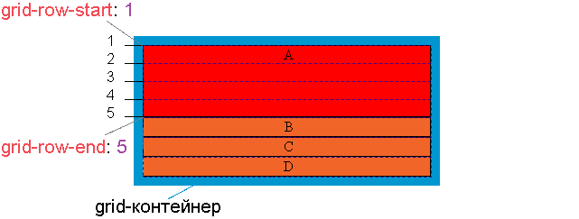

Свойство grid-row-end — определяет сколько строк будет занимать элемент, или на какой строке заканчивается элемент в макете сетки.
Для того, чтобы определить на какой горизонтальной линии начинается элемент можно воспользоваться свойством grid-row-start.

.item {
grid-row-end: auto | line | line-name | span line | initial | inherit;
}| auto | Значение по умолчанию. Элемент будет размещен в соответствии с потоком. |
| line | Целое число, которое соответствует конечной грани элемента в макете сетки (отсчет ведется сверху вниз от верхнего края макета). Если задано отрицательное целое число, то отсчет ведется в обратном порядке, начиная с конечного края явной сетки макета.
Значение 0 недопустимо. |
| line-name | Строковое значение ссылающееся на именованную строку в макете сетки. Элемент располагается до начальной грани указанного элемента. |
| span line | Ключевое слово span с целым числом, определяющее количество строк сетки элемент будет охватывать. Если целое число опущено, то по умолчанию используется значение 1.
Отрицательные значения или значение 0 недопустимы. |
| initial | Устанавливает свойство в значение по умолчанию. |
| inherit | Значение наследуется от родительского элемента. |
<div class="grid-container">
<div class="grid-item">A</div>
<div class="grid-item grid-item-b">B</div>
<div class="grid-item">C</div>
<div class="grid-item">D</div>
<div class="grid-item">E</div>
<div class="grid-item">F</div>
<div class="grid-item">G</div>
</div>
<style>
.grid-container{
display:grid;
grid-template: auto / auto auto auto auto;
gap: 10px;
}
.grid-item-b{
grid-column: 1;
grid-row-start: 2;
grid-row-end: span 2;
background: red;
}
</style>